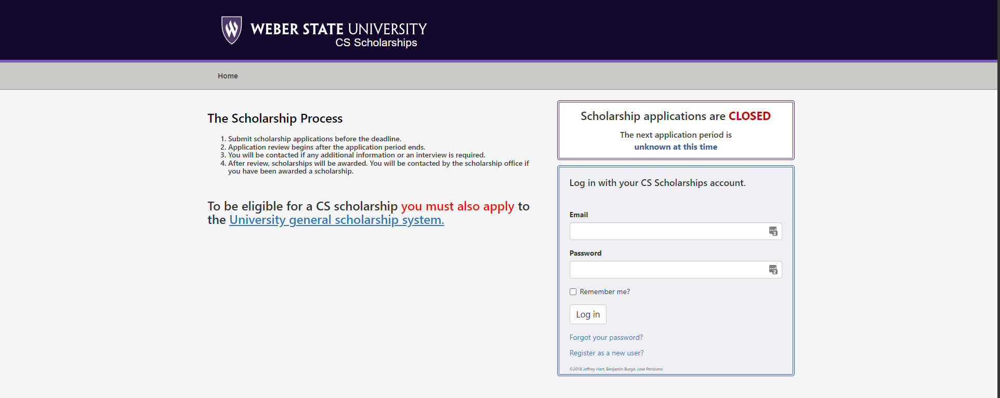

Scholarship App .NET Migration/Bug fixing Project
Technologies/Software used: .NET Core, C#, Razor Pages, Entity Framework, HTML5, CSS3, Bootstrap
For this group project we were tasked with taking an existing .NET Core 2.0 web application a previous CAPSTONE group made and migrating it to .NET Core 6.0 and fixing/finding various bugs. My responsibility in this project was adding a section to the student profile for high school related STEM activities and migrating the project from .NET Core 2.1 to 2.2. and then 2.2 to 2.3 This was a challenging project that had many obstacles. One of which I ran into which was migrating from 2.2 to 2.3. While trying to migrate the project following Microsoft's documentation there were conflicts between outdated functions and libraries that were crucial to making the project run and adapting the codebase to follow what is now Razor Pages required major refactoring. After consulting with my team we eventually found a migration assistant that allowed us to skip over the version by version migration and go straight to .NET 6.0. This was an interesting project and gave me first hand experience of dealing with a large scale professionally written codebase.
Visit RepoHigh School STEM Activites Field Code
<div class="form-group">
<label asp-for="STEMHighSchoolClubsAndActivitiesHistory" class="control-label"></label>
<input asp-for="STEMHighSchoolClubsAndActivitiesHistory" class="form-control" rows="4" />
<span asp-validation-for="STEMHighSchoolClubsAndActivitiesHistory" class="text-danger></span>
</div>